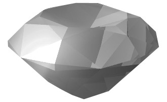
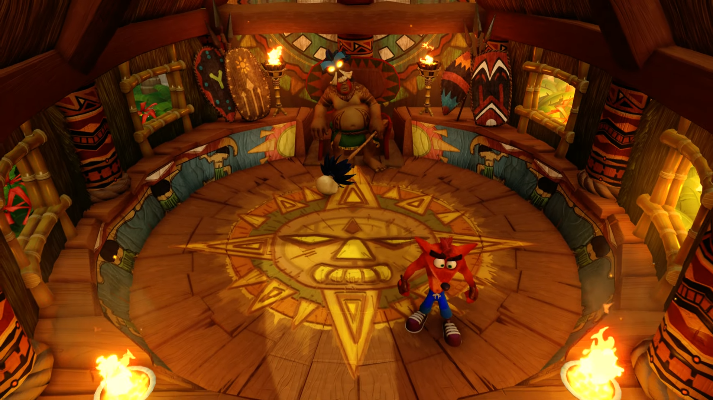
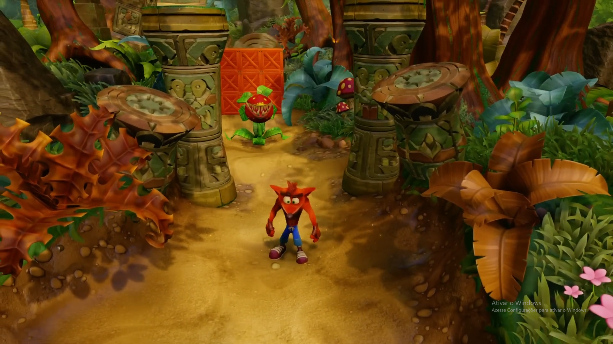
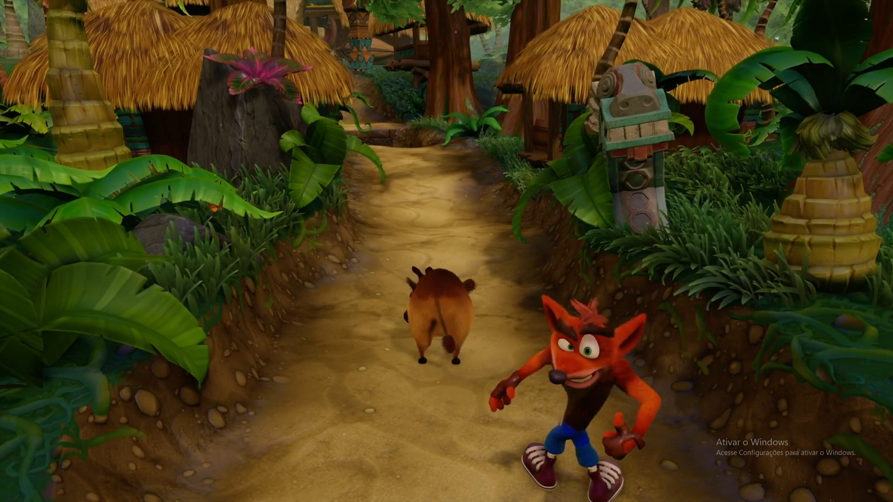

Fase 1
N. SANITY BEACH
Objetivos para conquistas: 2
Objetivo: É possivel destruir todas as caixas na primeira jogatina.

Após destruir todas as caixas da fase, incluindo as caixas de fase bonus e fase secretas. (GEMAS +1)
Desafio das Relíquias:
Obs: para o 100%, é necessário relíquia Platinum ou Gold.
| N. Sanity Beach | |
|---|---|
| Relíquia | Tempo |
| Sapphire | 0:34:00 |
| Gold | 0:28:26 |
| Platinum | 0:25:76 |
Fase 2
JUNGLE ROLLERS
Objetivos para conquistas: 3
Objetivos: Não é possivel destruir todas as caixas na primeira jogatina. Apenas conclua a fase e posteriormente retorne a ela com a gema necessária.
Após coletar todas as fichas com o rosto de Tawna Bandicoot (3), você tera acesso a fase bonus e a primeira conquista por entrar pela primeira vez em uma fase bonus.

Conquista - That's What Those Do!
Para destruir todas as caixas, é preciso adquirir a Gema Verde. A gema verde libera o caminho especial da fase Jungle Rollers.
Para conquistar a Gema Verde é preciso quebrar todas as caixas da fase The Lost City sem perder uma vida.
Após destruir todas as caixas da fase, incluindo as caixas de fase bonus e fase secretas. (GEMAS +1)
Desafio das Relíquias:
Obs: para o 100%, é necessário relíquia Platinum ou Gold.
| Jungle Rollers | |
|---|---|
| Relíquia | Tempo |
| Sapphire | 1:03:00 |
| Gold | 0:48:12 |
| Platinum | 0:46:89 |
Fase 3
THE GREAT GATE
Objetivos para conquistas: 2
Objetivos: Não é possivel destruir todas as caixas na primeira jogatina. Apenas conclua a fase e posteriormente retorne a ela com a gema necessária.
Para destruir todas as caixas, é preciso adquirir a Gema Amarela. A gema amarela libera o caminho especial da fase The Great Gate.
Para conquistar a Gema Amarela é preciso quebrar todas as caixas da fase The Lab sem perder uma vida.
Após destruir todas as caixas da fase, incluindo as caixas de fase bonus e fase secretas. (GEMAS +1)
Desafio das Relíquias:
Obs: para o 100%, é necessário relíquia Platinum ou Gold.
| The Great Gate | |
|---|---|
| Relíquia | Tempo |
| Sapphire | 1:05.00 |
| Gold | 0:53.29 |
| Platinum | 0:48.07 |
Fase 4
BOULDERS
Objetivos para conquistas: 2
Objetivos: É possivel destruir todas as caixas na primeira jogatina.
Após destruir todas as caixas da fase. (GEMAS +1)
Desafio das Relíquias:
Obs: para o 100%, é necessário relíquia Platinum ou Gold.
| Boulders | |
|---|---|
| Relíquia | Tempo |
| Sapphire | 1:04.00 |
| Gold | 0:49.44 |
| Platinum | 0:47.48 |
Fase 5
UPSTREAM
Objetivos para conquistas: 3
Objetivos: Não é possivel destruir todas as caixas na primeira jogatina. Apenas conclua a fase e posteriormente retorne a ela com a gema necessária.
Para destruir todas as caixas, é preciso adquirir a Gema Laranja. A gema laranja libera o caminho especial da fase Upstream.
Para conquistar a Gema Laranja é preciso quebrar todas as caixas da fase Generator Room sem perder uma vida.
Após destruir todas as caixas da fase, incluindo as caixas de fase bonus e fase secretas. (GEMAS +1)
Desafio das Relíquias:
Obs: para o 100%, é necessário relíquia Platinum ou Gold.
| Upstream | |
|---|---|
| Relíquia | Tempo |
| Sapphire | 1:03.00 |
| Gold | 0:49.95 |
| Platinum | 0:46.51 |
Após conquistar 5 Reliquias do tempo:
Conquista: Catch Me If You Can!
Fase 6
PAPU PAPU
Objetivos para conquistas: 1
Objetivo: Derrotar Papu Papu.

Após derrotar Papu Papu.
Conquista - C1 | Papu Popped
Fase 7
ROLLING STONES
Objetivos para conquistas: 2
Objetivos: Não é possivel destruir todas as caixas na primeira jogatina. Apenas conclua a fase e posteriormente retorne a ela com a gema necessária.

Para destruir todas as caixas, é preciso adquirir a Gema Azul. A gema azul libera o caminho especial da fase Rolling Stones.
Para conquistar a Gema Azul é preciso quebrar todas as caixas da fase Toxic Waste sem perder uma vida.
Após destruir todas as caixas da fase, incluindo as caixas de fase bonus e fase secretas. (GEMAS +1)
Desafio das Relíquias:
Obs: para o 100%, é necessário relíquia Platinum ou Gold.
| Rolling Stones | |
|---|---|
| Relíquia | Tempo |
| Sapphire | 1:04.00 |
| Gold | 0:50.35 |
| Platinum | 0:46.49 |
Fase 8
HOG WILD
Objetivos para conquistas: 2
Objetivos: É possivel destruir todas as caixas na primeira jogatina.

Após destruir todas as caixas da fase. (GEMAS +1)
Desafio das Relíquias:
Obs: para o 100%, é necessário relíquia Platinum ou Gold.
| Hog Wild | |
|---|---|
| Relíquia | Tempo |
| Sapphire | 0:55.00 |
| Gold | 0:47.53 |
| Platinum | 0:43.42 |
Fase 9
NATIVE FORTRESS
Objetivos para conquistas: 2
Objetivos: Não é possivel destruir todas as caixas na primeira jogatina. Apenas conclua a fase e posteriormente retorne a ela com a gema necessária.
Para destruir todas as caixas, é preciso adquirir a Gema Vermelha. A gema vermelha libera o caminho especial da fase Native Fortress.
Para conquistar a Gema Vermelha é preciso quebrar todas as caixas da fase Slippery Climb ou The Lost City sem perder uma vida.
Após destruir todas as caixas da fase, incluindo as caixas de fase bonus e fase secretas. (GEMAS +1)
Desafio das Relíquias:
Obs: para o 100%, é necessário relíquia Platinum ou Gold.
| Native Fortress | |
|---|---|
| Relíquia | Tempo |
| Sapphire | 2:55.00 |
| Gold | 2:25.87 |
| Platinum | 2:05.80 |
Fase 10
UP THE CREEK
Objetivos para conquistas: 2
Objetivos: É possivel destruir todas as caixas na primeira jogatina.
Na fase, após ativar a "Caixa !" retorne até um tronco que serve de ponte. Em baixo do mesmo você encontrará duas caixas para destruir.
Após destruir todas as caixas da fase. (GEMAS +1)
Desafio das Relíquias:
Obs: para o 100%, é necessário relíquia Platinum ou Gold.
| Up The Creek | |
|---|---|
| Relíquia | Tempo |
| Sapphire | 1:42.00 |
| Gold | 1:20.25 |
| Platinum | 1:16.31 |
Fase 11
RIPPER ROO
Objetivos para conquistas: 1
Objetivo: Derrotar Ripper Roo.
Após derrotar Ripper Roo.

Conquista - C1 | Ripper Ruined.
Fase 12
THE LOST CITY
Objetivos para conquistas: 2
Objetivo: Destruir todas as caixas da fase sem perder nenhuma vida.
OBS: Perder vida dentro da fase bonus não impede de adquirir a gema no final da fase.
A gema verde da acesso a uma área secreta nas fases Native Fortress e Road to Nowhere.
Após destruir todas as caixas da fase, incluindo as caixas de fase bonus e fase secretas. (GEMA VERDE)
Desafio das Relíquias:
Obs: para o 100%, é necessário relíquia Platinum ou Gold.
| The Lost City | |
|---|---|
| Relíquia | Tempo |
| Sapphire | 2:35.00 |
| Gold | 1:56.12 |
| Platinum | 1:40.52 |